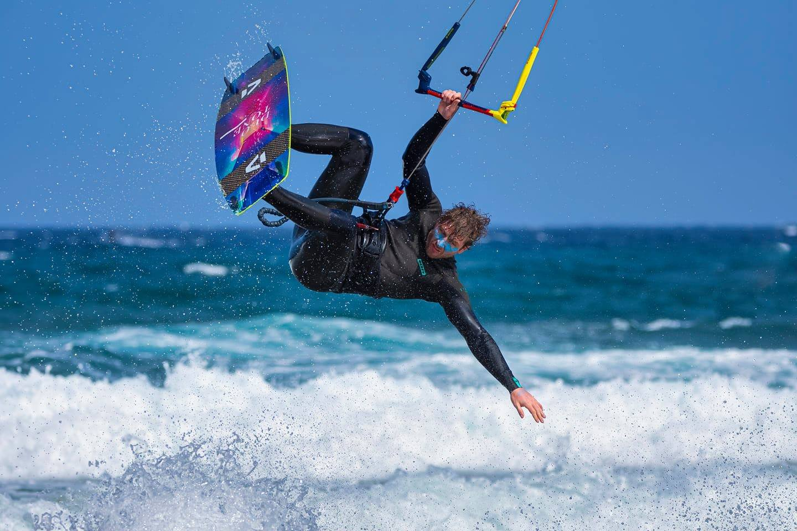

About Me
Jakub Vit
I am Czech by origin, born in 1981 in Prague. Now I live with my family in the Netherlands, Amsterdam. I have masters in Philosophy from the University of Amsterdam, where I was interested in the computational theory of the mind. But dont let that scare you.
Even though I love to think about theoretical problems I also love to dive into practical issues related to everyday reasoning, programming or business decisions. I've worked in IT field since early 2000's for multiple multinational software companies in support, data warehouse design, consultancy, implementation, IT architecture and design.
I want to provide you with highest quality services, knowledge, coding skills, but I also want to learn and apply new methods of work like utilizing AI tools on my projects. When I am not working or spending time with my family, you can probably find me kitesurfing. I also have and IKO certification to teach this amazing sport.